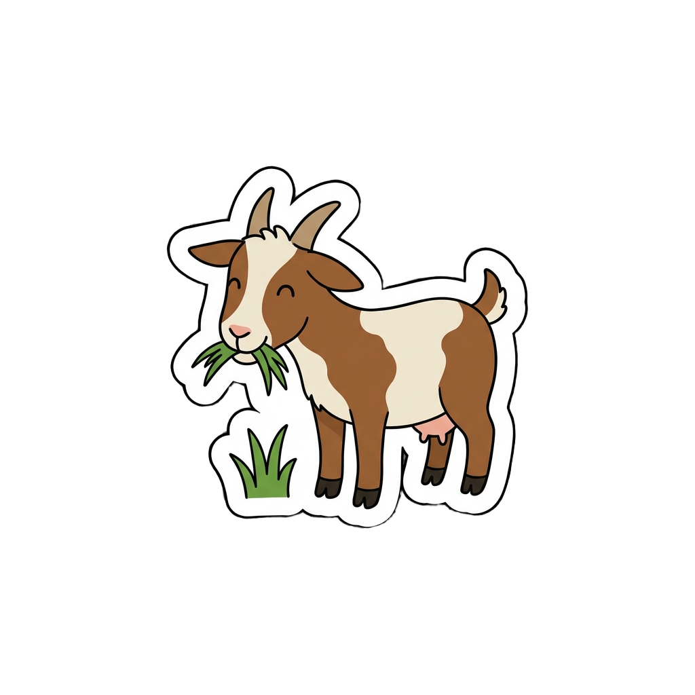
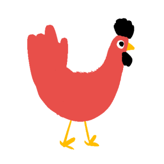
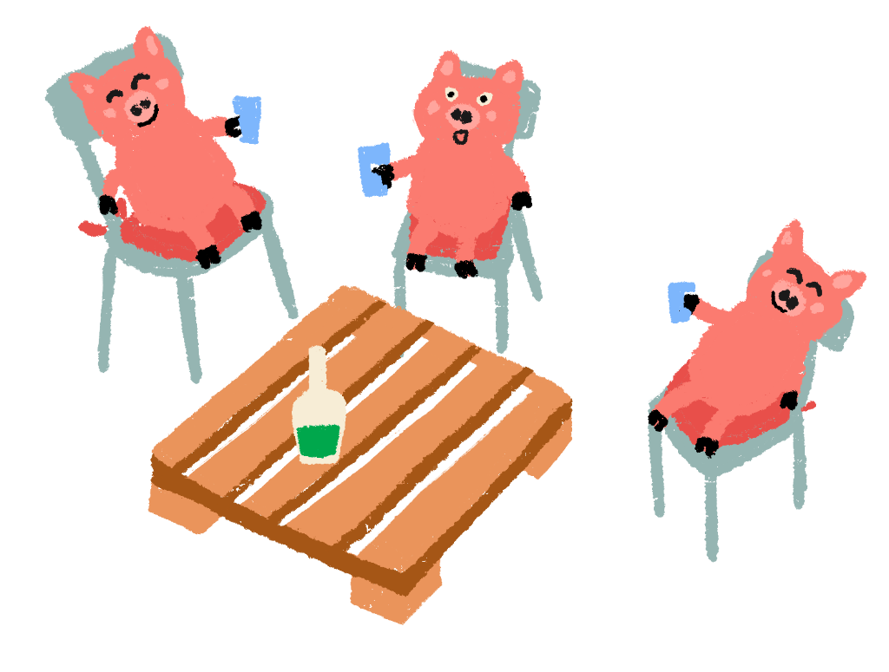
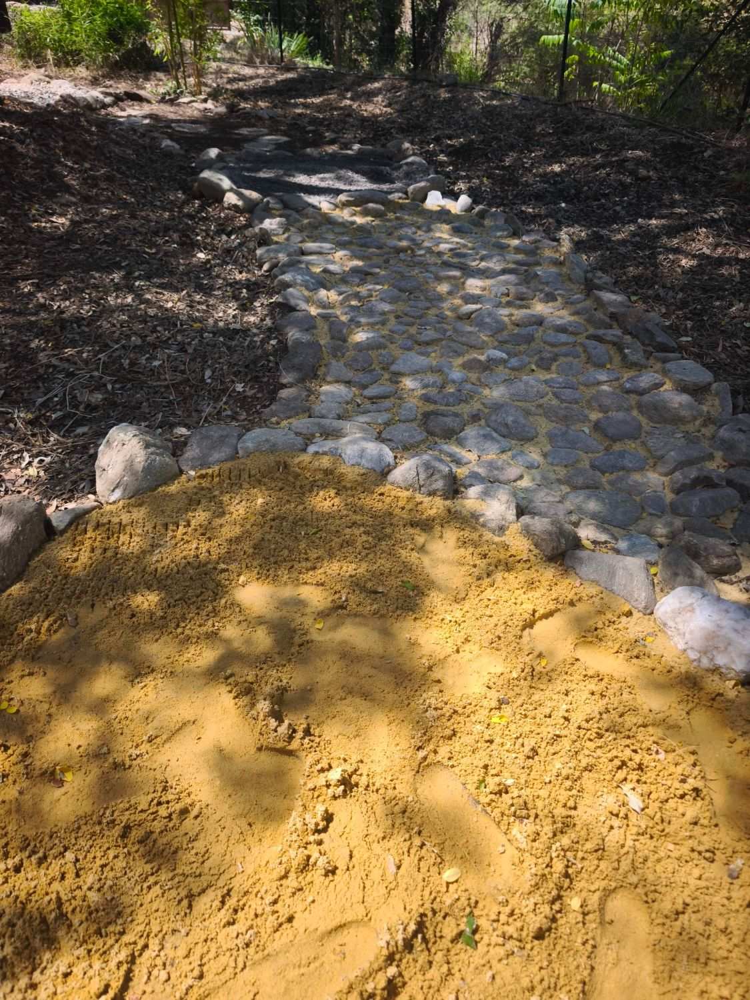
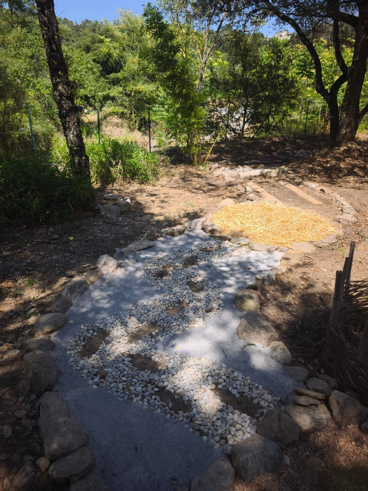
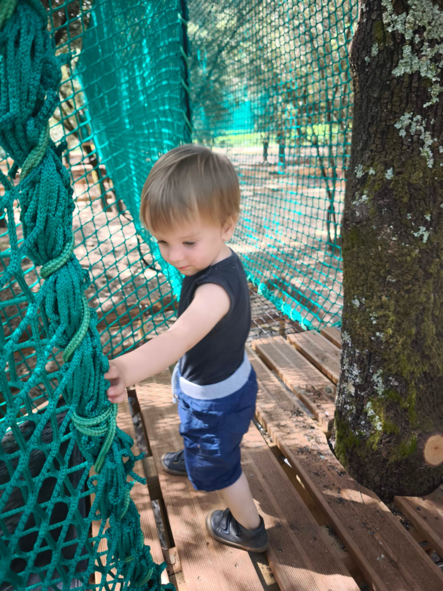
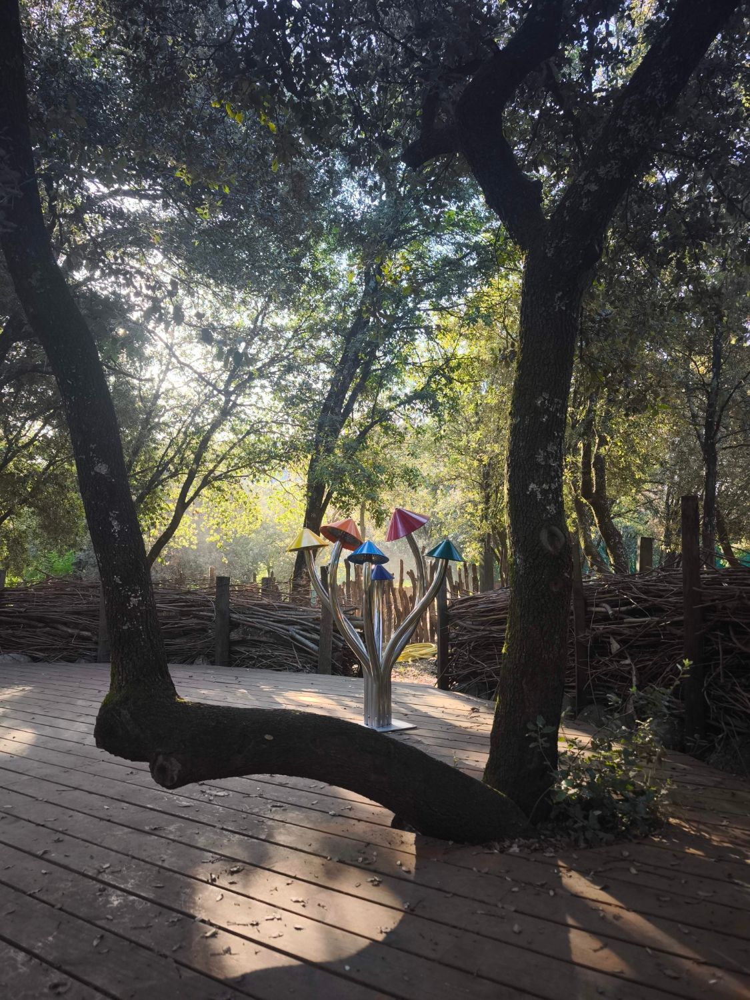

TIERE UND SPIELE
Alle unsere Aktivitäten und Kuriositäten
Unsere Bewohner
Dieser Bauernhof kümmert sich das ganze Jahr um seine Esel, Zwergziegen, Hühner und Schweine. Hier nimmt man sich Zeit, sie zu beobachten, zu füttern und zu streicheln. Ein einfacher Moment, in dem echte Verbindungen mit der Tierwelt entstehen.

Esel
Unsere großen, neugierigen und zärtlichen Ohren.

Zwergziegen
Verspielt, verschmust und immer zum Spielen bereit.

Hühner
Sie laufen frei herum und regieren ihre kleine Welt.

Schweine
Die Könige des Nickerchens und der guten Laune.
Vielleicht kommen noch weitere Bewohner zur Familie dazu… Folgen Sie uns, um sie zu entdecken!
Sinnesweg
Schließen Sie die Augen. Gehen Sie barfuß. Hören Sie den Wind in den Blättern, fühlen Sie die Baumrinde, riechen Sie die Erde. Der Sinnesweg des Attrape-Rêves lädt dazu ein, die Welt mit allen Sinnen neu zu entdecken.


Netze in den Bäumen
Zwischen den Ästen aufgehängt, bieten unsere Netze einen Luftparcours für alle ab 3 Jahren, ohne Ausrüstung. Klettern, hüpfen, rollen, das Blätterdach frei und sicher erkunden.

Spiele & Kuriositäten
Spiele, Zerrspiegel, Musikinstrumente, eine Kühlzone, versteckte Wunder… Alles ist darauf ausgelegt, den Kindheitssinn zu wecken, die Fantasie anzuregen und die Neugier zu wecken. Wir verraten nicht alles… kommen Sie und schauen Sie!

Arts Vivants & Culture
Aufführungen, kreative Workshops, Märchen, Musik… Momente, die das Leben am Ort bereichern und überraschen. La Compagnie des Songes, der vor Ort ansässige Verein, gestaltet diese Augenblicke des Austauschs und der kulturellen Entdeckung. Schauen Sie in unseren Agenda für das Programm.